Empire Stone × Empire Granite — QA
Golden Path — Slab (Slab=lot) (ชุดที่ 2 จาก 3)
เรื่องราวของ Slab ตั้งแต่ตัด Block เป็น Slab (Cut Order) → ซื้อ Slab สำเร็จรูปจากผู้ขาย → ขายเป็นรายแผ่น → ส่งของโดยสแกน Serial → ออกใบแจ้งหนี้ → ลูกค้าคืน Slab แล้วตรวจนำกลับไปขาย — ใช้ Block ที่เหลือจากชุดที่ 1 ชุดถัดไปคือ FG · รันจริงบน eg-tst 5 ต.ค. 2026
18Test Case ทั้งหมด
4หมวด
17High Priority
1Medium Priority
0Low Priority
S1. ตัด Block เป็น Slab (Cut Order)
เปิดใบตัด → ย้าย Block ไปสถานีตัด → Confirm → ตัดเสร็จได้ Slab รายแผ่น · 5 test cases
| TC ID | Scenario | Precondition | Steps | ข้อมูลตัวอย่าง | Expected Result | Priority | ภาพหน้าจอ |
|---|---|---|---|---|---|---|---|
| TC-GP-SLB-01 | สร้างใบตัด (Cut Order) แล้วเลือก Block ที่จะตัด | มี Block ในคลัง (จากชุด Block เช่น BLK-26-0006 ซึ่งมี 6.00 m³) |
|
Stone Block = BLK-26-0006 | ระบบเติมขนาดแผ่นที่จะตัดให้เอง (กว้าง 3.00 × สูง 1.25 ม. หนา 2 ซม.) และคำนวณจำนวนแผ่นที่คาดว่าจะได้ไว้ในแท็บ "Planned/Actual Slabs" = 80 แถว (แถวละ 1 แผ่น, 3.00 × 1.25 × 0.02 ม.) — Block 6.00 m³ ตัดได้ 80 แผ่นพอดี | High | 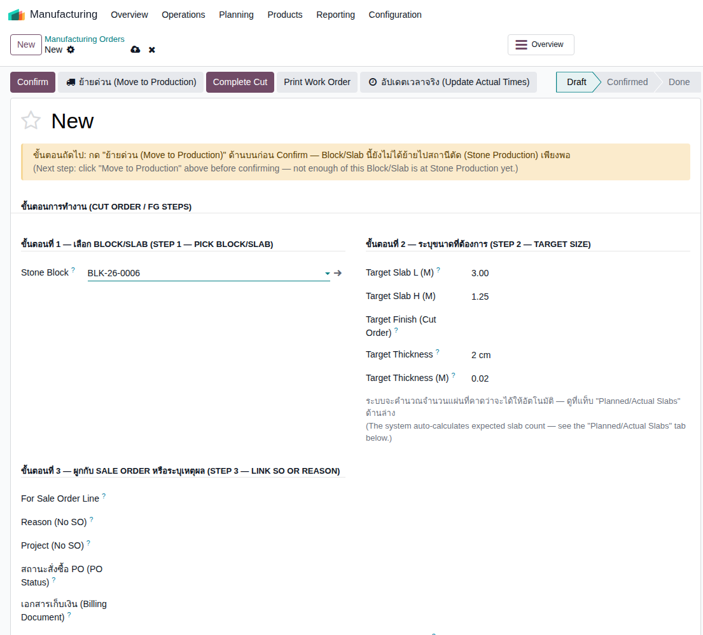 |
| TC-GP-SLB-02 | ย้าย Block ไปสถานีตัด (ย้ายด่วน) แถบเตือนสีส้มบนหน้าใบตัดจะเปลี่ยนเป็น "พร้อม Confirm แล้ว" เมื่อเปิดหน้านี้ใหม่ (รีเฟรช) — เป็นแค่ข้อความ ไม่กระทบการทำงาน |
ทำ TC-GP-SLB-01 เสร็จแล้ว และกด Save แล้ว |
|
- | ระบบแจ้งเตือนสีเขียวว่า "ย้ายสำเร็จ Block BLK-26-0006 ย้ายไป Stone Production แล้ว 6.000 หน่วย — กด Confirm ได้เลย" (Block ถูกย้ายจาก Stone Available ไปสถานีตัดแล้ว) | High | 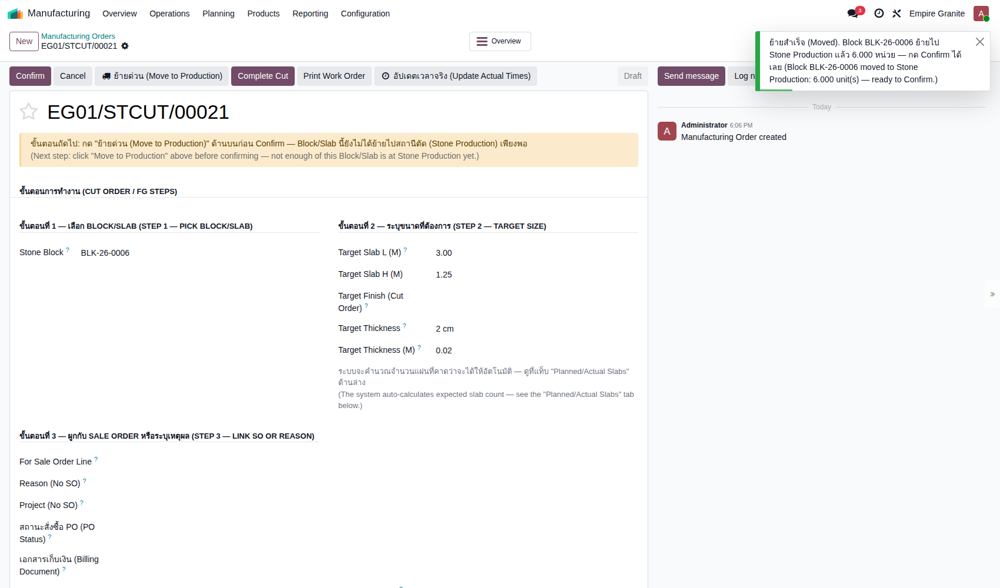 |
| TC-GP-SLB-03 | เลือกเหตุผลของใบตัด แล้วกด Confirm ใบตัดที่ไม่ได้ผูกกับใบสั่งขาย ต้องเลือก "Reason (No SO)" ก่อนเสมอ ถ้าไม่เลือก ระบบจะไม่ให้ Confirm — กรณีตัดเข้าสต็อกทั่วไปให้เลือก "อื่นๆ (Other)" |
ทำ TC-GP-SLB-02 เสร็จแล้ว |
|
Reason (No SO) = อื่นๆ (Other) | ใบตัดเปลี่ยนสถานะเป็น In Progress (ใบตัดตัวอย่างจริง EG01/STCUT/00021) — ปุ่ม Complete Cut พร้อมใช้งาน | High | 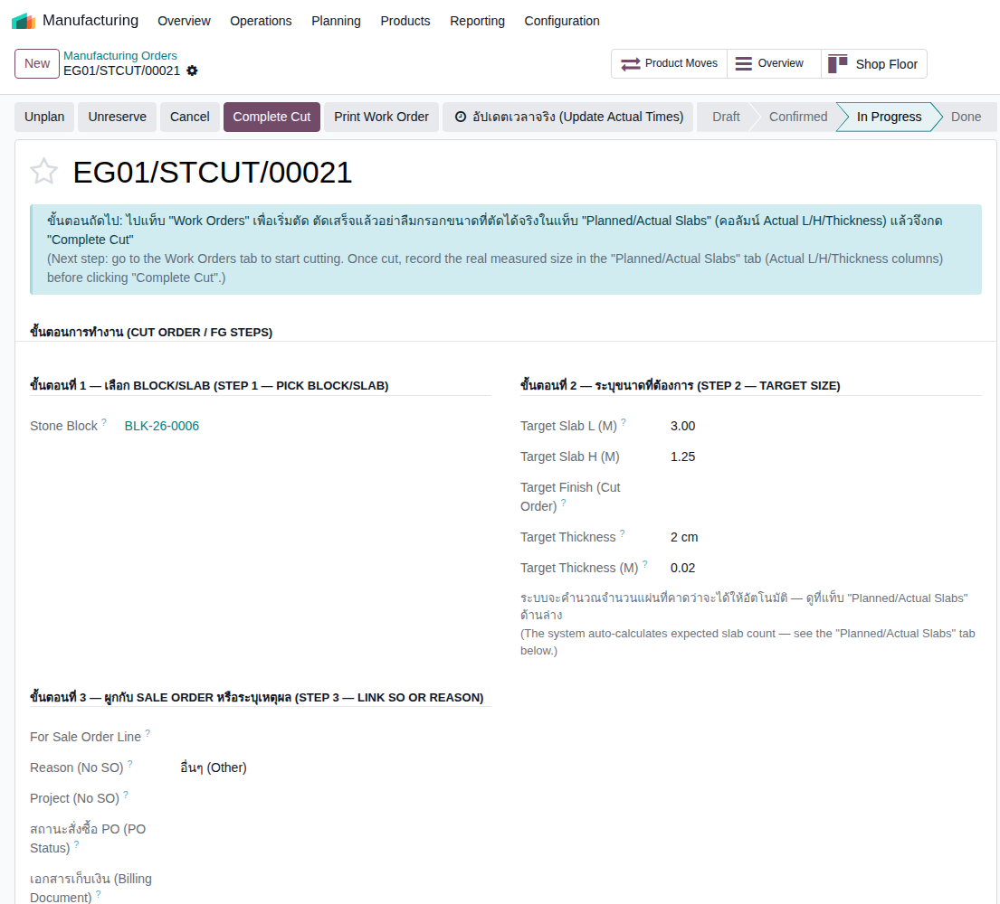 |
| TC-GP-SLB-04 | ตัดเสร็จ กด Complete Cut ได้ Slab ทุกแผ่น ต้นทุน Block ถูกแบ่งให้ทุกแผ่นเท่ากัน: Block 6.00 m³ ต้นทุน 97,200 บาท ÷ 80 แผ่น = 1,215 บาทต่อแผ่น (ตรวจจากต้นทุนขายตอนขายใน TC-GP-SLB-13) — ถ้าหน้างานตัดได้ขนาดจริงต่างจากแผน ให้แก้คอลัมน์ Actual L/H/Thickness ในแท็บ Planned/Actual Slabs ก่อนกดปุ่ม |
ทำ TC-GP-SLB-03 เสร็จแล้ว |
|
- | ระบบแจ้งเตือนสีเขียว "Complete Cut สำเร็จ EG01/STCUT/00021 ตัดได้ 80 แผ่นจาก BLK-26-0006" · ใบตัดขึ้น Done · Quantity 80.00 · ปุ่ม Serial Numbers แสดง 80 | High | 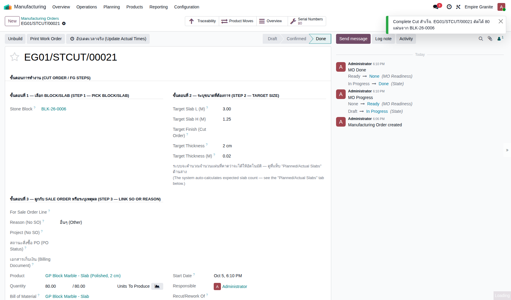 |
| TC-GP-SLB-05 | ตรวจ Slab ที่ตัดได้ในรายการ Slab ภาพตัวอย่างถ่ายหลังขาย 4 แผ่นไปแล้ว (TC-GP-SLB-10 ถึง 13) จึงแสดง 76 แผ่นที่ยัง Available — ตอนตัดเสร็จใหม่ๆ จะเห็น 80 แผ่น |
ทำ TC-GP-SLB-04 เสร็จแล้ว |
|
ค้นหา = BLK-26-0006 | เห็น Slab ชื่อ BLK-26-0006-1, -2, -3 … ต่อเนื่องไปถึง -80 แผ่นละบรรทัด ขนาด 3.00 × 1.25 × 0.020 ม. = 3.75 ตร.ม. (รวม 300 ตร.ม.) สถานะ Available คอลัมน์ Block ชี้กลับไปที่ BLK-26-0006 | High | 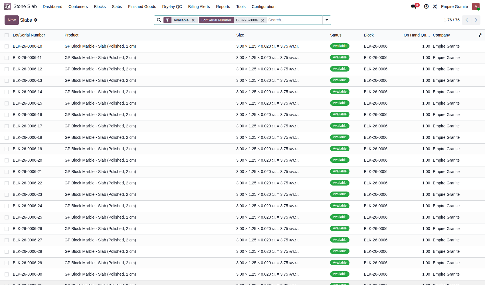 |
S2. รับ Slab สำเร็จรูปจากผู้ขาย (Purchase)
ซื้อแผ่นสำเร็จรูปเป็นราคาต่อตร.ม. — ระบบคิดมูลค่าจากขนาดจริงของแต่ละแผ่น · 3 test cases
| TC ID | Scenario | Precondition | Steps | ข้อมูลตัวอย่าง | Expected Result | Priority | ภาพหน้าจอ |
|---|---|---|---|---|---|---|---|
| TC-GP-SLB-06 | สร้างใบสั่งซื้อ (PO) Slab สำเร็จรูป ราคาต่อตารางเมตร แล้ว Confirm ช่อง "Qty (Sq.M)" ระบบคำนวณให้จากขนาดมาตรฐานของสินค้า (4 แผ่น × 4.80 = 19.20 ตร.ม.) เป็นแค่ปริมาณโดยประมาณ — มูลค่าจริงจะคิดจากขนาดที่วัดได้ตอนรับของ (TC-GP-SLB-07) |
มีหินชนิดนี้ในระบบ (GP Block Marble จากชุด Block) · มีผู้ขายในระบบ |
|
Vendor = Demo Stone Supplier Quantity = 4 แผ่น Price / Sq.M = 1,300 |
PO ขึ้นสถานะ Purchase Order: Qty (Sq.M) 19.20, Quantity 4.00 · ยอดก่อน VAT 24,960.00 บาท, VAT 1,747.20, รวม 26,707.20 (ตัวอย่างจริง P00055) มีสมาร์ทปุ่ม Receipt 1 ใบ | High | 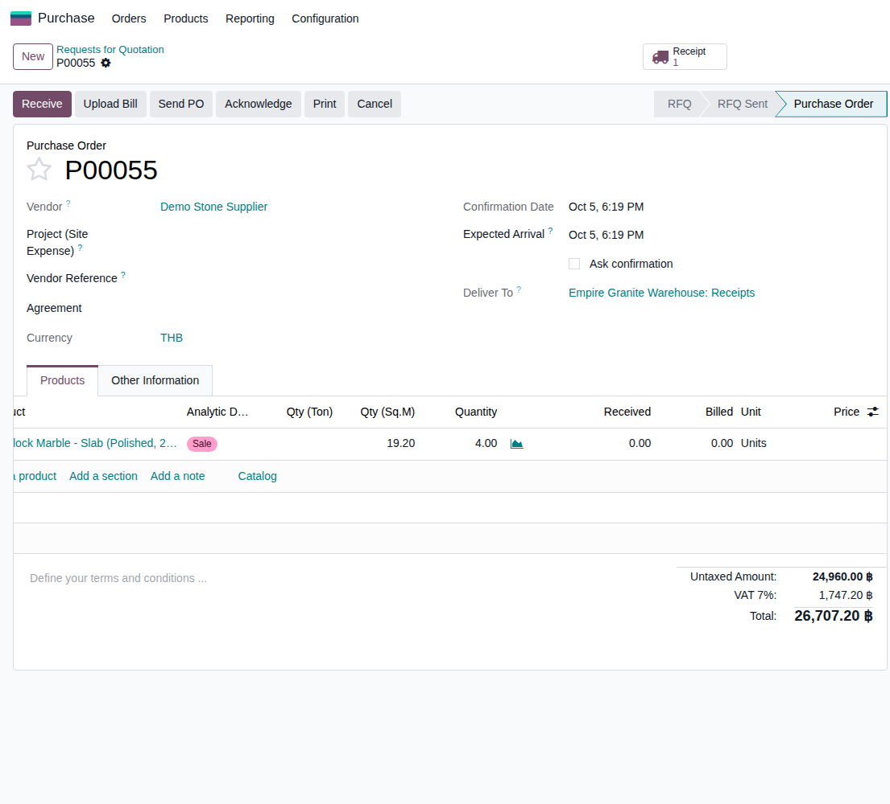 |
| TC-GP-SLB-07 | รับของ กรอกขนาดจริงของแต่ละแผ่น แล้ว Validate | ทำ TC-GP-SLB-06 เสร็จแล้ว |
|
แผ่น 1: กว้าง 1.58 × ยาว 2.95 แผ่น 2: กว้าง 1.60 × ยาว 3.00 แผ่น 3: กว้าง 1.55 × ยาว 2.90 แผ่น 4: กว้าง 1.60 × ยาว 3.00 หนาทุกแผ่น = 0.02 ม. |
ใบรับของขึ้น Done (EG01/IN/00057) แยกเป็น 4 บรรทัดบรรทัดละ 1 แผ่น · ระบบตั้งชื่อ Lot ให้เอง SLB-26-0001 ถึง SLB-26-0004 · มูลค่าสต็อกรวม 24,382.80 บาท (= พื้นที่จริง 18.756 ตร.ม. × 1,300 — แผ่นละ 6,059.30 / 6,240.00 / 5,843.50 / 6,240.00) | High | 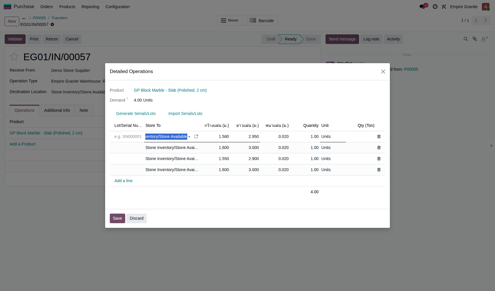 |
| TC-GP-SLB-08 | ตรวจ Slab ที่รับเข้ามาในรายการ Slab | ทำ TC-GP-SLB-07 เสร็จแล้ว |
|
ค้นหา = SLB-26 | เห็น 4 แผ่น ขนาดและพื้นที่ตรงกับที่วัด: 1.58 × 2.95 = 4.66 · 1.60 × 3.00 = 4.80 · 1.55 × 2.90 = 4.50 · 1.60 × 3.00 = 4.80 ตร.ม. สถานะ Available (คอลัมน์ Block ว่าง เพราะซื้อมาเป็นแผ่นสำเร็จ ไม่ได้ตัดจาก Block ของเรา) | Medium | 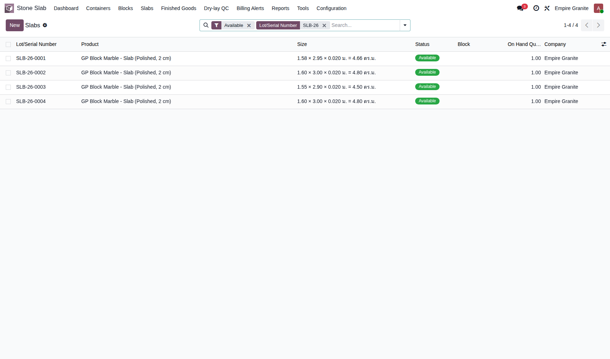 |
S3. ขาย Slab (Sales)
ขายเป็นรายแผ่น เลือก Slab ที่ต้องการ → ส่งของโดยสแกน Serial → ออกใบแจ้งหนี้ · 5 test cases
| TC ID | Scenario | Precondition | Steps | ข้อมูลตัวอย่าง | Expected Result | Priority | ภาพหน้าจอ |
|---|---|---|---|---|---|---|---|
| TC-GP-SLB-09 | สร้างใบเสนอราคา (SO) และเลือกสินค้า Slab | มี Slab พร้อมขายใน Stone Available · มีลูกค้าในระบบ |
|
ลูกค้า = Demo Hotel Customer Finish = Polished · Thickness = 2 cm |
ได้บรรทัดสินค้า "GP Block Marble - Slab (Polished, 2 cm)" ราคา 4,500 บาท/ตร.ม. (ตอนนี้ยังเป็นขนาดมาตรฐาน 3.00 × 1.60 = 4.80 ตร.ม. → 21,600 บาท — ยอดจริงจะคำนวณใหม่เมื่อเลือกแผ่นในขั้นถัดไป) · บันทึกแล้วได้เลขที่ใบ S00174 | High | 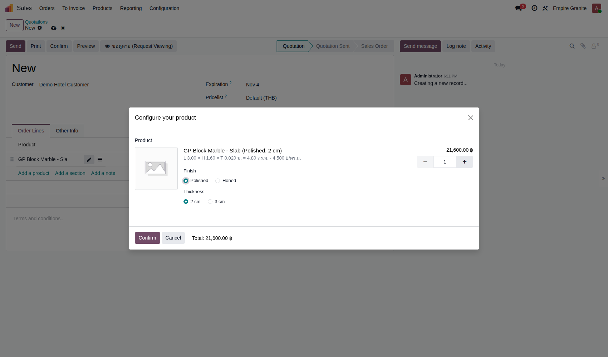 |
| TC-GP-SLB-10 | เลือก Slab ที่จะขาย (หน้าต่างเลือก Slab / Lot) | ทำ TC-GP-SLB-09 เสร็จแล้ว (บรรทัดสินค้าถูกบันทึกแล้ว) |
|
เลือก 4 แผ่น: BLK-26-0006-1, -2, -3, -4 | หน้าต่างแสดงขนาด จำนวนที่ว่าง และตร.ม. ของแต่ละแผ่น พื้นที่ที่เลือกรวม 15.00 ตร.ม. · พอกดยืนยัน บรรทัดสินค้าเปลี่ยนเป็น "4 แผ่น = 15.00 ตร.ม. · 4,500 ฿/ตร.ม." พร้อมรายชื่อแผ่นที่เลือก · ยอดก่อน VAT 67,500.00 บาท, VAT 4,725.00, รวม 72,225.00 | High | 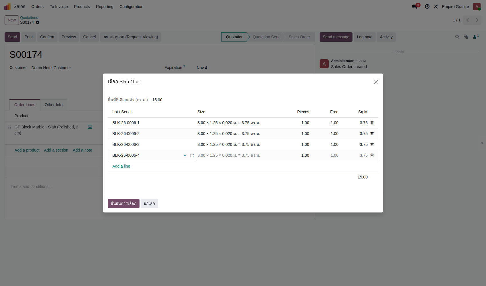 |
| TC-GP-SLB-11 | กด Confirm ใบสั่งขาย แถบสีแดง "ขนาดแผ่นจริงต่างจากที่เสนอลูกค้า" ขึ้นเพราะใบเสนอราคาใช้ขนาดมาตรฐาน 3.00 × 1.60 (4.80 ตร.ม./แผ่น) แต่แผ่นจริงที่เลือกคือ 3.75 ตร.ม./แผ่น — ระบบล็อกยอดไว้ที่ 67,500 และเตือนเซลล์ให้แจ้งลูกค้า เป็นพฤติกรรมตามออกแบบ (ล็อกยอด ADR-079) ไม่ใช่ข้อผิดพลาด |
ทำ TC-GP-SLB-10 เสร็จแล้ว |
|
- | สถานะเป็น Sales Order · ยอดคงเดิม 67,500.00 + VAT 4,725.00 = 72,225.00 · มีสมาร์ทปุ่ม Delivery 1 ใบ และ Slabs 4 แผ่น · คอลัมน์ Delivered ยังเป็น 0.00 จาก 4.00 | High | 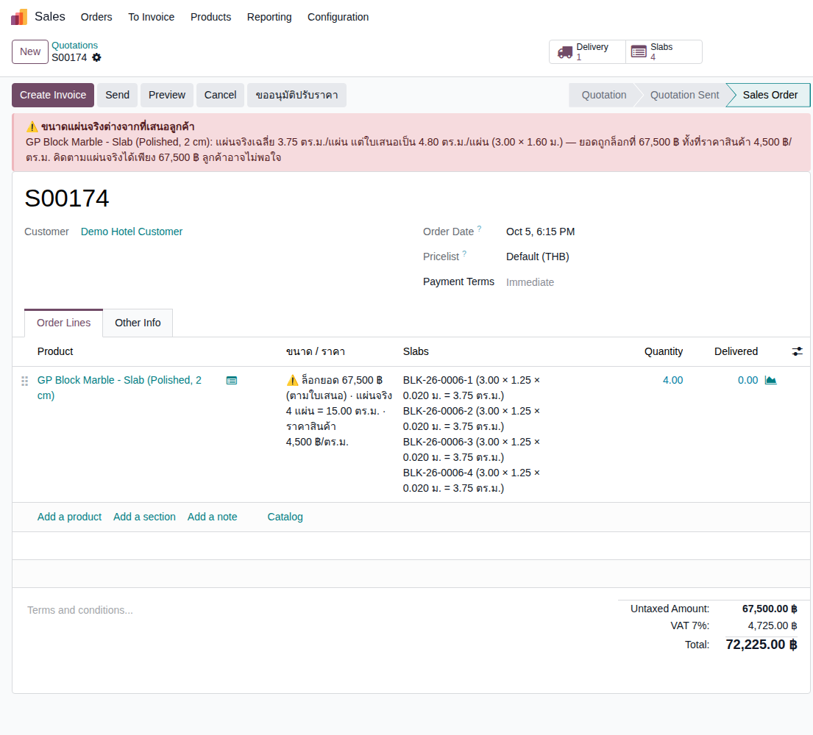 |
| TC-GP-SLB-12 | ส่งของ: สแกน Serial ทุกแผ่นก่อน Validate ใบส่งของ Slab บังคับให้สแกน (หรือพิมพ์) ชื่อ Serial ของทุกแผ่นให้ตรงกับที่จะส่งก่อน Validate เพื่อกันส่งผิดแผ่น — ถ้ายังไม่สแกน ระบบจะแจ้งว่า "สแกน Serial ไม่ตรง กรุณาสแกนให้ครบก่อน Validate" พร้อมรายชื่อแผ่นที่ขาด (เจอจริงในรอบทดสอบนี้) |
ทำ TC-GP-SLB-11 เสร็จแล้ว |
|
แถว 1 → BLK-26-0006-1 แถว 2 → BLK-26-0006-2 แถว 3 → BLK-26-0006-3 แถว 4 → BLK-26-0006-4 |
ใบส่งของขึ้น Done ปริมาณ 4.00 (ตัวอย่างจริง EG01/OUT/00058) ตัดสต็อกจาก Stone Available — Slab ทั้ง 4 แผ่นไม่อยู่ในรายการ Available อีกต่อไป (เหลือ 76 แผ่นของ BLK-26-0006) | High | 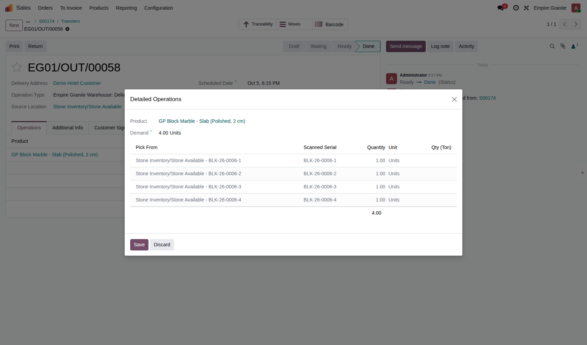 |
| TC-GP-SLB-13 | ออกใบแจ้งหนี้ และตรวจรายการบัญชี (รายได้ + ต้นทุนขาย) | ทำ TC-GP-SLB-12 เสร็จแล้ว |
|
- | ใบแจ้งหนี้ขึ้น Posted (INV/2026/00003) · รายการบัญชีสมดุลที่ 77,085.00: รายได้ 411100 = 67,500.00 · VAT ขาย 213200 = 4,725.00 · ลูกหนี้ 112100 = 72,225.00 · ต้นทุนขาย 511110 = 4,860.00 และตัดสต็อกออกจากบัญชี 113120 = 4,860.00 (= 4 แผ่น × 1,215 ตรงกับต้นทุนต่อแผ่นจาก TC-GP-SLB-04) | High | 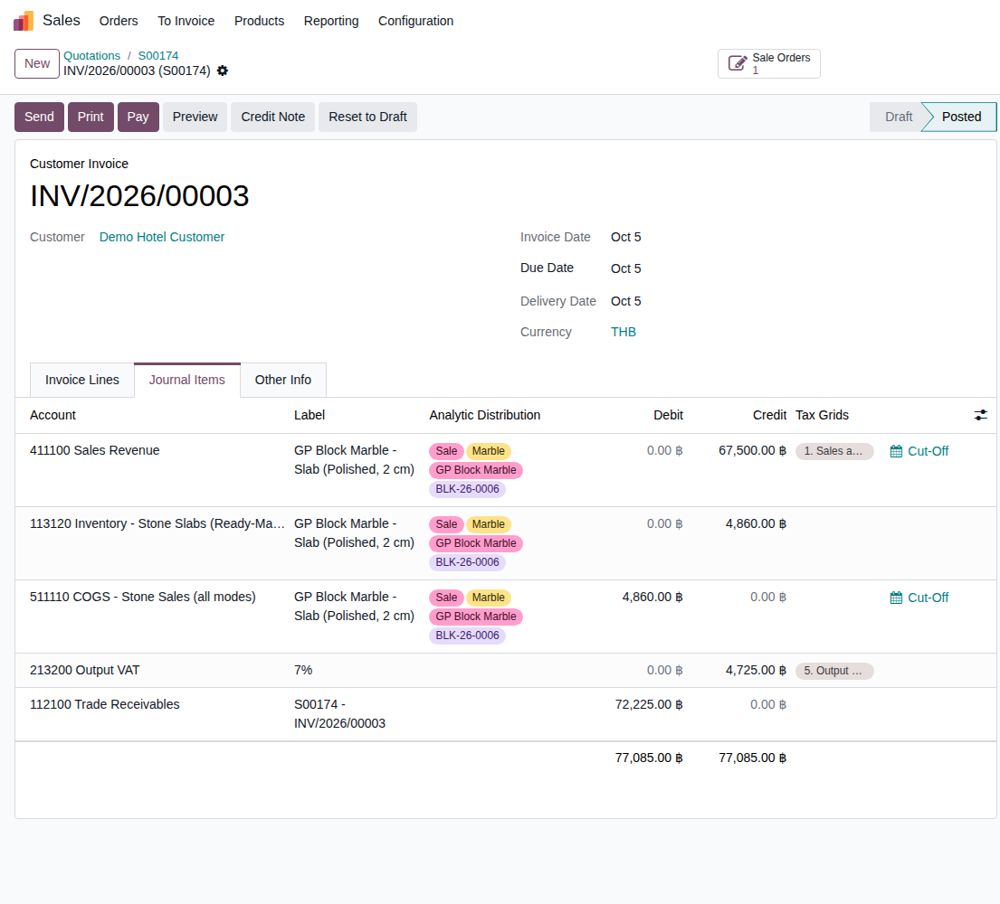 |
S4. ลูกค้าคืน Slab (Return)
ลูกค้าส่งแผ่นคืน → รับเข้าที่ "รอตรวจ" → ตรวจแล้วนำกลับไปขายได้อีก · 5 test cases
| TC ID | Scenario | Precondition | Steps | ข้อมูลตัวอย่าง | Expected Result | Priority | ภาพหน้าจอ |
|---|---|---|---|---|---|---|---|
| TC-GP-SLB-14 | เปิดใบคืนจากใบส่งของ (Return) หน้าต่าง Return ขึ้นจำนวนเป็น 0.00 ตามที่ออกแบบ — ให้กด "Return All" (คืนทั้งหมด) หรือแก้จำนวนเอง ปลายทางของใบคืนถูกตั้งเป็น "Returned - Inspect" ให้อัตโนมัติ เพราะแผ่นที่ลูกค้าคืนต้องตรวจก่อนเสมอ |
ทำ TC-GP-SLB-12 เสร็จแล้ว (ใบส่งของ EG01/OUT/00058 สถานะ Done) |
|
คืนทั้ง 4 แผ่นของใบส่งของ EG01/OUT/00058 | ระบบสร้างใบรับคืนใหม่ทันที (ตัวอย่างจริง EG01/IN/00058) สถานะ Ready · รับจาก Demo Hotel Customer · ปลายทาง Stone Inventory/Returned - Inspect · อ้างอิง "Return of EG01/OUT/00058" · Demand 4.00 | High | 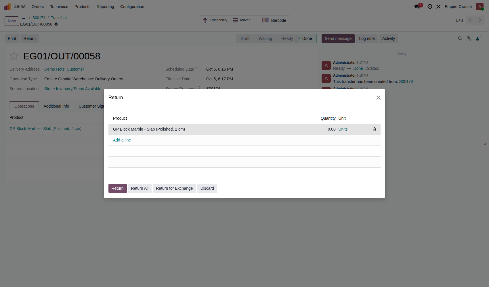 |
| TC-GP-SLB-15 | ระบุแผ่นที่ลูกค้าส่งคืนจริง (Details) ใบรับคืนของ Slab เริ่มต้นโดยไม่เลือกแผ่นไว้ให้ ผู้รับของต้องระบุเองว่าแผ่นไหนกลับมา (ดีกว่าให้ระบบเดา เพราะลูกค้าอาจคืนไม่ครบ) ช่อง Lot/Serial จะแสดงเฉพาะแผ่นที่ถูกส่งไปที่ลูกค้าเท่านั้น |
ทำ TC-GP-SLB-14 เสร็จแล้ว |
|
BLK-26-0006-1, -2, -3, -4 (แผ่นละ 1) | ตาราง Detailed Operations แสดง 4 แถว ปลายทาง Store To ทุกแถวเป็น Stone Inventory/Returned - Inspect · รวม 4.00 Units ตรงกับ Demand | High | 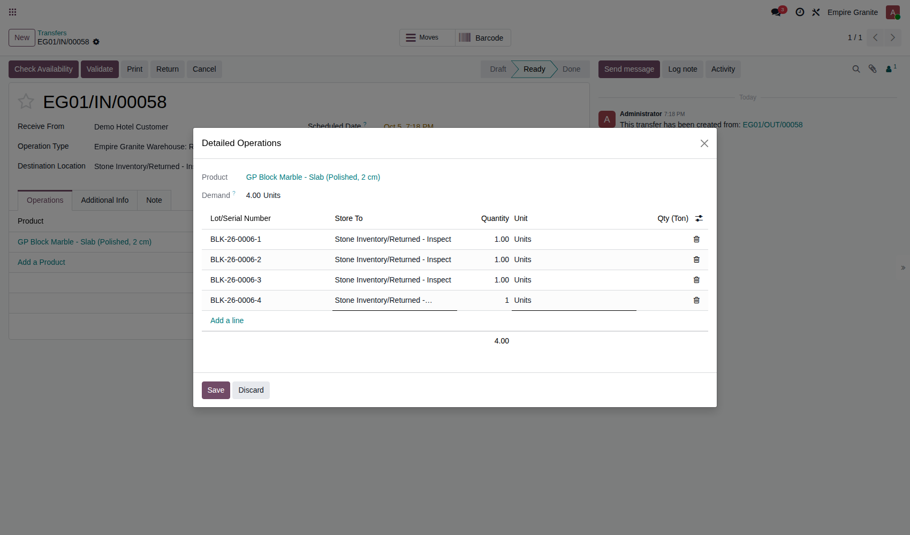 |
| TC-GP-SLB-16 | กด Validate รับของคืน | ทำ TC-GP-SLB-15 เสร็จแล้ว |
|
- | ใบรับคืนขึ้น Done · Quantity 4.00 จาก Demand 4.00 · Effective Date เป็นเวลาที่กด · แชตด้านขวาบันทึก Ready → Done | High | 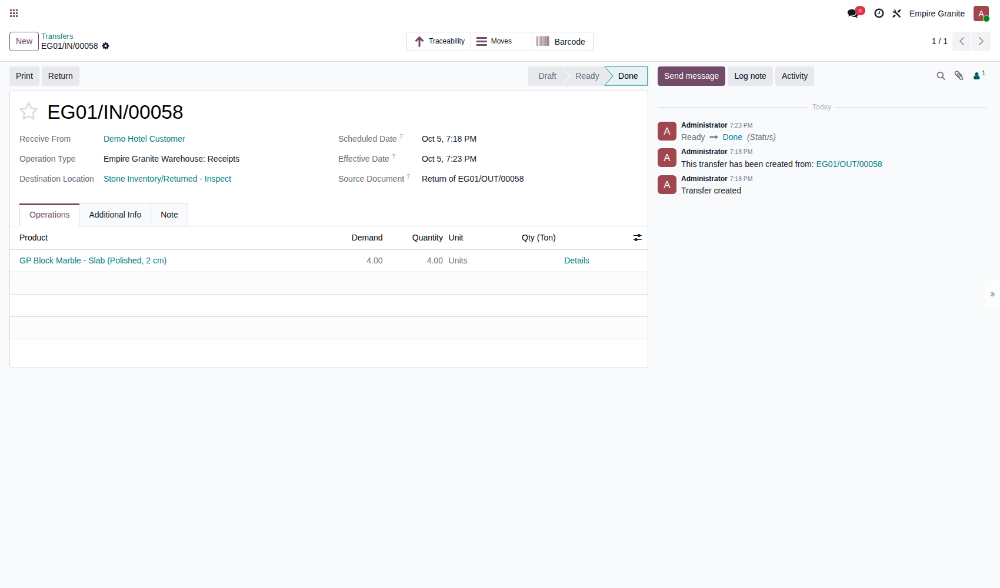 |
| TC-GP-SLB-17 | ตรวจว่า Slab ที่คืนอยู่ในสถานะ "รอตรวจ" | ทำ TC-GP-SLB-16 เสร็จแล้ว |
|
BLK-26-0006-1 | แผ่นที่คืนขึ้นสถานะ "Returned - Pending Inspection" (สีส้ม) อยู่ที่ Stone Inventory/Returned - Inspect · ยังไม่ถูกนับเป็นของพร้อมขาย (ไม่โผล่ในตัวกรอง Available) · แผ่นอื่นของ Block เดียวกันยังเป็น Available ตามเดิม | High | 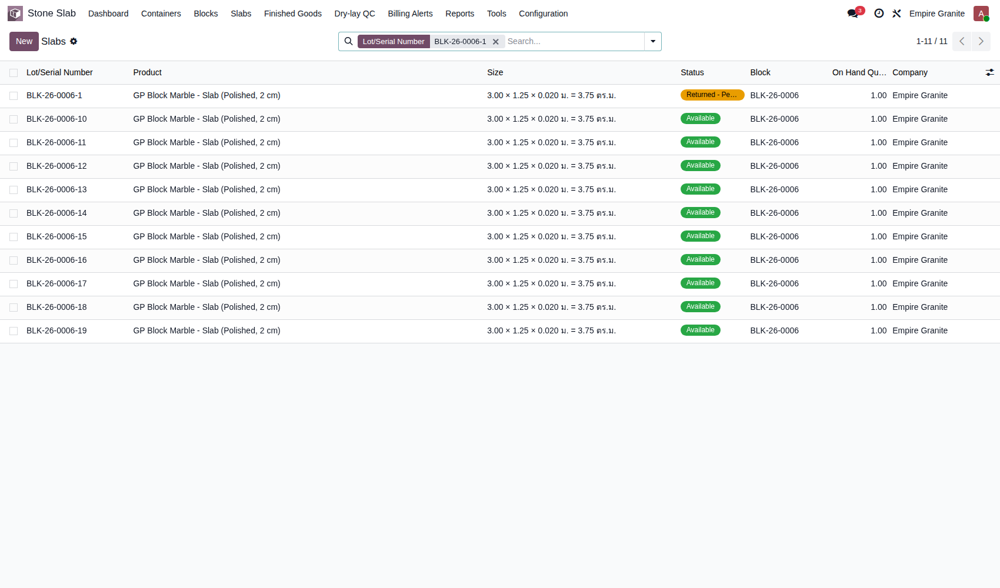 |
| TC-GP-SLB-18 | ตรวจแผ่นแล้ว นำกลับไปขายได้อีก ถ้าตรวจแล้วแผ่นชำรุด ให้กดปุ่ม "ชำรุด — ตัดทิ้ง (Scrap)" แทน (ไม่ได้ทดสอบในชุดนี้ เพราะเป็นเส้นทางนอก Happy Path) การรับคืนในชุดนี้ยังไม่รวมการออกใบลดหนี้ (Credit Note) ให้ลูกค้า |
ทำ TC-GP-SLB-17 เสร็จแล้ว |
|
BLK-26-0006-1, -2, -3, -4 | สถานะเปลี่ยนเป็น Available · Location กลับเป็น Stone Inventory/Stone Available · ปุ่มตรวจแล้ว/ชำรุดหายไป · ต้นทุนยังเป็น 1,215.00 บาทเท่าเดิม · Slab กลับมาเลือกขายได้ใหม่ (BLK-26-0006 กลับเป็น 80 แผ่น Available) | High | 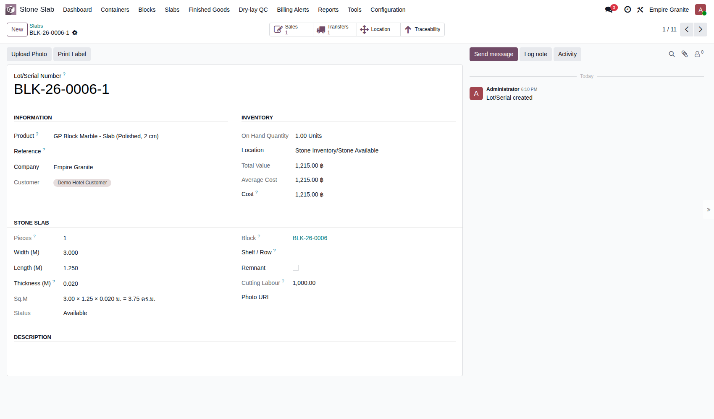 |